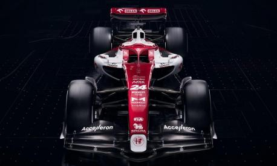

L'Alfa Romeo ha partecipato al Campionato mondiale di Formula 1 a più riprese, sia come scuderia costruttrice che come fornitrice di motori, dal 1950 al 1988. Dal 2018 è inoltre presente in F1 come title sponsor e partner tecnico del team svizzero Sauber.
Monoposto 2022
L'Alfa Romeo C42 è una monoposto di Formula 1, costruita dalla scuderia Alfa Romeo F1 Team per partecipare al campionato mondiale di Formula 1 2022. La livrea della C42 — ancora disegnata dal Centro Stile Alfa Romeo, il cui logo è posizionato sotto il numero di gara sul cofano motore — schematicamente si rinnova completamente rispetto alle monoposto antecedenti a partire dalla C37, mentre cromaticamente fa uso degli stessi colori. Di base è presente il rosso, il quale è diviso in due porzioni da una banda obliqua bianca che colora parte delle pance laterali e dell'airscope. Di bianco sono colorati anche la punta del muso, nel quale è posto il logo dell'Alfa Romeo, e le parti esterne delle paratie dell'ala anteriore, mentre neri sono il fondo della vettura, le parti laterali del muso e le ali anteriore e posteriore. In particolare l'ala mobile del DRS di quest'ultimata finlandese continua a giungere al traguardo fuori dalla zona punti, con l'eccezione di un ritiro per problemi meccanici nel Gran Premio d'Ungheria. Conquista i primi punti in carriera solo nella penultima gara del campionato, il Gran Premio degli Stati Uniti, nel quale giunge ottavo al traguardo dopo essere scattato dalla nona posizione. Bottas chiude quindi il campionato in diciassettesima posizione, con quattro punti La stagione seguente inizia in modo migliore, con la nuova Williams FW36 motorizzata Mercedes che si rivela nettamente più competitiva della vettura precedente. Nel Gran Premio d'apertura Bottas conquista il suo miglior risultato in carriera, tagliando il traguardo in sesta posizione e venendo poi promosso al quinto posto per la squalifica di Daniel Ricciardo. Il pilota finlandese coglie punti anche nelle tre gare seguenti, ottenendo un settimo e due ottavi posti. Ripete poi il suo miglior piazzamento in Spagna